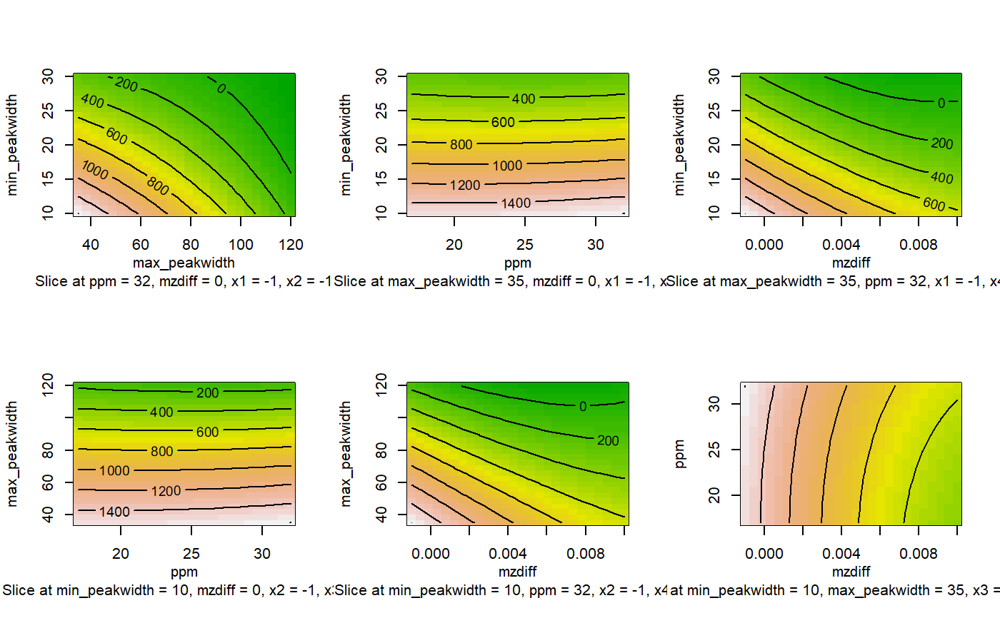
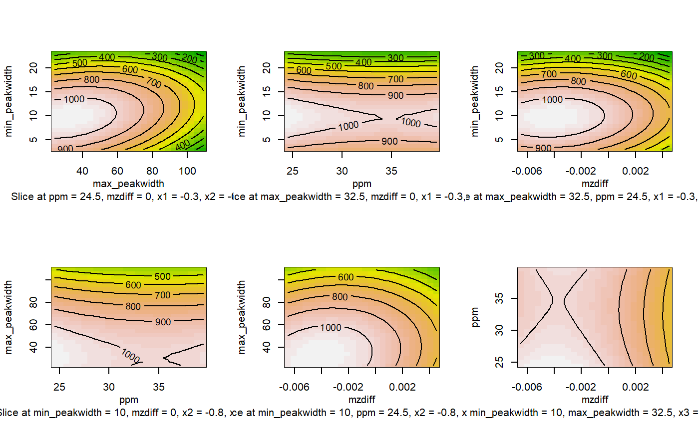
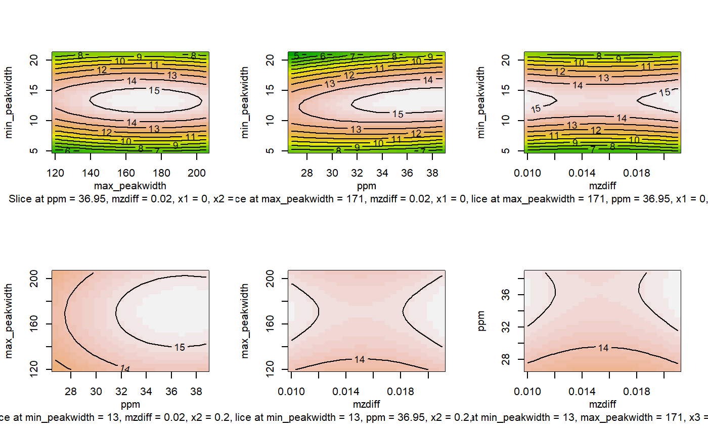

lcms_peakpicking_optimization.RdThe function optimize parameters considering a set of samples for the peak picking algorithm using the IPO Package. This includes Peak Detection (‘Centwave’ and ‘Matched Filter’), Retention Time Correction (‘obiwarp’) and Peak Correspondence (‘Density’).
lcms_peakpicking_optimization(lcms_dataset, peakpickingParameters, nSlaves = 1, opt_path, subdir = "plot_ipo", plots = TRUE)
| lcms_dataset | A lcms_dataset_family object |
|---|---|
| peakpickingParameters | Parameters for peak picking |
| nSlaves | Number of slaves the optimization process should spawn. |
| opt_path | Path where optimization samples are saved. Id subdir is |
| subdir | Folder where surface plots are save. If NULL they are displayed by the graphical device. |
| plots | Defines if plots should be generated (TRUE) or not (FALSE) in a subfolder called "plot_ipo" (default). |
A peak picking list with the best setting
Other optimization functions: lcms_default_peakpicking_params,
lcms_default_retcorgroup_params,
lcms_write_opt_params
opt_path <- system.file("extdata", package = "NIHSlcms") file_name <- system.file("extdata", "lcms_dataset_rt_pos_rs.rds", package = "NIHSlcms") lcms_dataset <- lcms_dataset_load(file_name) default_peakpicking_params <- lcms_default_peakpicking_params(optimize = TRUE) resultPeakpicking <- lcms_peakpicking_optimization(lcms_dataset, default_peakpicking_params, opt_path = opt_path, subdir = NULL)#> Be careful if you run twice the function using the same output directory. #> The algorithm won't rewrite files that are already in the directory, but will store new samples in it. #> Samples used for optimization: #> 1.mzXML 2.mzXML 3.mzXML 4.mzXML #> Saving filtered chromatogram... #> Performing retention time and grouping #> parameter optimization. This will take some time...print(resultPeakpicking)#> [[1]] #> [[1]]$params #> [[1]]$params$to_optimize #> [[1]]$params$to_optimize$min_peakwidth #> [1] 10 30 #> #> [[1]]$params$to_optimize$max_peakwidth #> [1] 35 120 #> #> [[1]]$params$to_optimize$ppm #> [1] 17 32 #> #> [[1]]$params$to_optimize$mzdiff #> [1] -0.001 0.010 #> #> #> [[1]]$params$no_optimization #> [[1]]$params$no_optimization$snthresh #> [1] 10 #> #> [[1]]$params$no_optimization$noise #> [1] 5000 #> #> [[1]]$params$no_optimization$prefilter #> [1] 3 #> #> [[1]]$params$no_optimization$value_of_prefilter #> [1] 100 #> #> [[1]]$params$no_optimization$mzCenterFun #> [1] "wMean" #> #> [[1]]$params$no_optimization$integrate #> [1] 1 #> #> [[1]]$params$no_optimization$fitgauss #> [1] FALSE #> #> [[1]]$params$no_optimization$verbose.columns #> [1] FALSE #> #> #> #> [[1]]$design #> run.order std.order min_peakwidth max_peakwidth ppm mzdiff Block #> 1 1 1 10 35.0 17.0 -0.0010 1 #> 2 2 2 30 35.0 17.0 -0.0010 1 #> 3 3 3 10 120.0 17.0 -0.0010 1 #> 4 4 4 30 120.0 17.0 -0.0010 1 #> 5 5 5 10 35.0 32.0 -0.0010 1 #> 6 6 6 30 35.0 32.0 -0.0010 1 #> 7 7 7 10 120.0 32.0 -0.0010 1 #> 8 8 8 30 120.0 32.0 -0.0010 1 #> 9 9 9 10 35.0 17.0 0.0100 1 #> 10 10 10 30 35.0 17.0 0.0100 1 #> 11 11 11 10 120.0 17.0 0.0100 1 #> 12 12 12 30 120.0 17.0 0.0100 1 #> 13 13 13 10 35.0 32.0 0.0100 1 #> 14 14 14 30 35.0 32.0 0.0100 1 #> 15 15 15 10 120.0 32.0 0.0100 1 #> 16 16 16 30 120.0 32.0 0.0100 1 #> 17 17 17 20 77.5 24.5 0.0045 1 #> 18 1 1 10 77.5 24.5 0.0045 2 #> 19 2 2 30 77.5 24.5 0.0045 2 #> 20 3 3 20 35.0 24.5 0.0045 2 #> 21 4 4 20 120.0 24.5 0.0045 2 #> 22 5 5 20 77.5 17.0 0.0045 2 #> 23 6 6 20 77.5 32.0 0.0045 2 #> 24 7 7 20 77.5 24.5 -0.0010 2 #> 25 8 8 20 77.5 24.5 0.0100 2 #> 26 9 9 20 77.5 24.5 0.0045 2 #> #> Data are stored in coded form using these coding formulas ... #> x1 ~ (min_peakwidth - 20)/10 #> x2 ~ (max_peakwidth - 77.5)/42.5 #> x3 ~ (ppm - 24.5)/7.5 #> x4 ~ (mzdiff - 0.0045)/0.0055 #> #> [[1]]$response #> exp num_peaks notLLOQP num_C13 PPS #> [1,] 1 542 346 34 3.3410405 #> [2,] 2 101 50 0 0.0000000 #> [3,] 3 755 520 58 6.4692308 #> [4,] 4 223 155 12 0.9290323 #> [5,] 5 559 369 52 7.3279133 #> [6,] 6 64 39 0 0.0000000 #> [7,] 7 897 633 90 12.7962085 #> [8,] 8 264 204 20 1.9607843 #> [9,] 9 445 291 34 3.9725086 #> [10,] 10 87 47 0 0.0000000 #> [11,] 11 620 422 56 7.4312796 #> [12,] 12 206 146 12 0.9863014 #> [13,] 13 548 360 52 7.5111111 #> [14,] 14 64 39 0 0.0000000 #> [15,] 15 858 572 90 14.1608392 #> [16,] 16 264 204 20 1.9607843 #> [17,] 17 366 262 26 2.5801527 #> [18,] 18 634 407 64 10.0638821 #> [19,] 19 180 143 12 1.0069930 #> [20,] 20 270 185 20 2.1621622 #> [21,] 21 426 324 26 2.0864198 #> [22,] 22 322 237 16 1.0801688 #> [23,] 23 428 318 34 3.6352201 #> [24,] 24 382 276 26 2.4492754 #> [25,] 25 366 262 26 2.5801527 #> [26,] 26 366 262 26 2.5801527 #> #> [[1]]$model #> #> Call: #> rsm(formula = resp ~ SO(x1, x2, x3, x4), data = design) #> #> Coefficients: #> (Intercept) FO(x1, x2, x3, x4)x1 FO(x1, x2, x3, x4)x2 #> 2.691865 -3.679451 1.359230 #> FO(x1, x2, x3, x4)x3 FO(x1, x2, x3, x4)x4 TWI(x1, x2, x3, x4)x1:x2 #> 1.396850 0.184972 -0.804255 #> TWI(x1, x2, x3, x4)x1:x3 TWI(x1, x2, x3, x4)x1:x4 TWI(x1, x2, x3, x4)x2:x3 #> -1.160986 -0.192755 0.471081 #> TWI(x1, x2, x3, x4)x2:x4 TWI(x1, x2, x3, x4)x3:x4 PQ(x1, x2, x3, x4)x1^2 #> 0.098080 -0.006435 2.806336 #> PQ(x1, x2, x3, x4)x2^2 PQ(x1, x2, x3, x4)x3^2 PQ(x1, x2, x3, x4)x4^2 #> -0.604811 -0.371407 -0.214388 #> #> #> [[1]]$max_settings #> response x1 x2 x3 x4 #> [1,] 13.64882 -1 1 1 1 #> #> [[1]]$xset #> An "xcmsSet" object with 4 samples #> #> Time range: 59.9-1381 seconds (1-23 minutes) #> Mass range: 85.0288-726.3861 m/z #> Peaks: 858 (about 214 per sample) #> Peak Groups: 0 #> Sample classes: extdata #> #> Feature detection: #> o Peak picking performed on MS1. #> Profile settings: method = bin #> step = 0.1 #> #> Memory usage: 0.258 MB #> #> [[1]]$PPS #> ExpId #peaks #NonRP #RP PPS #> 0.00000 858.00000 572.00000 90.00000 14.16084 #> #> #> [[2]] #> [[2]]$params #> [[2]]$params$to_optimize #> [[2]]$params$to_optimize$min_peakwidth #> [1] 3 23 #> #> [[2]]$params$to_optimize$max_peakwidth #> [1] 77.5 162.5 #> #> [[2]]$params$to_optimize$ppm #> [1] 24.5 39.5 #> #> [[2]]$params$to_optimize$mzdiff #> [1] 0.0045 0.0155 #> #> #> [[2]]$params$no_optimization #> [[2]]$params$no_optimization$snthresh #> [1] 10 #> #> [[2]]$params$no_optimization$noise #> [1] 5000 #> #> [[2]]$params$no_optimization$prefilter #> [1] 3 #> #> [[2]]$params$no_optimization$value_of_prefilter #> [1] 100 #> #> [[2]]$params$no_optimization$mzCenterFun #> [1] "wMean" #> #> [[2]]$params$no_optimization$integrate #> [1] 1 #> #> [[2]]$params$no_optimization$fitgauss #> [1] FALSE #> #> [[2]]$params$no_optimization$verbose.columns #> [1] FALSE #> #> #> #> [[2]]$design #> run.order std.order min_peakwidth max_peakwidth ppm mzdiff Block #> 1 1 1 3 77.5 24.5 0.0045 1 #> 2 2 2 23 77.5 24.5 0.0045 1 #> 3 3 3 3 162.5 24.5 0.0045 1 #> 4 4 4 23 162.5 24.5 0.0045 1 #> 5 5 5 3 77.5 39.5 0.0045 1 #> 6 6 6 23 77.5 39.5 0.0045 1 #> 7 7 7 3 162.5 39.5 0.0045 1 #> 8 8 8 23 162.5 39.5 0.0045 1 #> 9 9 9 3 77.5 24.5 0.0155 1 #> 10 10 10 23 77.5 24.5 0.0155 1 #> 11 11 11 3 162.5 24.5 0.0155 1 #> 12 12 12 23 162.5 24.5 0.0155 1 #> 13 13 13 3 77.5 39.5 0.0155 1 #> 14 14 14 23 77.5 39.5 0.0155 1 #> 15 15 15 3 162.5 39.5 0.0155 1 #> 16 16 16 23 162.5 39.5 0.0155 1 #> 17 17 17 13 120.0 32.0 0.0100 1 #> 18 1 1 3 120.0 32.0 0.0100 2 #> 19 2 2 23 120.0 32.0 0.0100 2 #> 20 3 3 13 77.5 32.0 0.0100 2 #> 21 4 4 13 162.5 32.0 0.0100 2 #> 22 5 5 13 120.0 24.5 0.0100 2 #> 23 6 6 13 120.0 39.5 0.0100 2 #> 24 7 7 13 120.0 32.0 0.0045 2 #> 25 8 8 13 120.0 32.0 0.0155 2 #> 26 9 9 13 120.0 32.0 0.0100 2 #> #> Data are stored in coded form using these coding formulas ... #> x1 ~ (min_peakwidth - 13)/10 #> x2 ~ (max_peakwidth - 120)/42.5 #> x3 ~ (ppm - 32)/7.5 #> x4 ~ (mzdiff - 0.01)/0.0055 #> #> [[2]]$response #> exp num_peaks notLLOQP num_C13 PPS #> [1,] 1 527 394 38 3.6649746 #> [2,] 2 279 229 14 0.8558952 #> [3,] 3 641 476 48 4.8403361 #> [4,] 4 367 296 16 0.8648649 #> [5,] 5 666 534 36 2.4269663 #> [6,] 6 348 279 28 2.8100358 #> [7,] 7 818 638 42 2.7648903 #> [8,] 8 439 345 38 4.1855072 #> [9,] 9 524 393 38 3.6743003 #> [10,] 10 279 229 14 0.8558952 #> [11,] 11 637 473 48 4.8710359 #> [12,] 12 367 296 16 0.8648649 #> [13,] 13 666 534 36 2.4269663 #> [14,] 14 348 279 28 2.8100358 #> [15,] 15 816 637 42 2.7692308 #> [16,] 16 439 345 38 4.1855072 #> [17,] 17 736 506 82 13.2885375 #> [18,] 18 684 521 44 3.7159309 #> [19,] 19 378 297 32 3.4478114 #> [20,] 20 624 424 70 11.5566038 #> [21,] 21 785 535 90 15.1401869 #> [22,] 22 625 433 58 7.7690531 #> [23,] 23 811 556 84 12.6906475 #> [24,] 24 736 506 82 13.2885375 #> [25,] 25 736 506 82 13.2885375 #> [26,] 26 736 506 82 13.2885375 #> #> [[2]]$model #> #> Call: #> rsm(formula = resp ~ SO(x1, x2, x3, x4), data = design) #> #> Coefficients: #> (Intercept) FO(x1, x2, x3, x4)x1 FO(x1, x2, x3, x4)x2 #> 12.780786 -0.570790 0.522486 #> FO(x1, x2, x3, x4)x3 FO(x1, x2, x3, x4)x4 TWI(x1, x2, x3, x4)x1:x2 #> 0.489365 0.002465 -0.017713 #> TWI(x1, x2, x3, x4)x1:x3 TWI(x1, x2, x3, x4)x1:x4 TWI(x1, x2, x3, x4)x2:x3 #> 1.075760 -0.002773 0.065068 #> TWI(x1, x2, x3, x4)x2:x4 TWI(x1, x2, x3, x4)x3:x4 PQ(x1, x2, x3, x4)x1^2 #> 0.001607 -0.002230 -9.029664 #> PQ(x1, x2, x3, x4)x2^2 PQ(x1, x2, x3, x4)x3^2 PQ(x1, x2, x3, x4)x4^2 #> 0.736860 -2.381685 0.677003 #> #> #> [[2]]$max_settings #> response x1 x2 x3 x4 #> [1,] 14.75261 0 1 0.1 1 #> #> [[2]]$xset #> An "xcmsSet" object with 4 samples #> #> Time range: 63.9-1380.4 seconds (1.1-23 minutes) #> Mass range: 85.0288-706.7816 m/z #> Peaks: 791 (about 198 per sample) #> Peak Groups: 0 #> Sample classes: extdata #> #> Feature detection: #> o Peak picking performed on MS1. #> Profile settings: method = bin #> step = 0.1 #> #> Memory usage: 0.252 MB #> #> [[2]]$PPS #> ExpId #peaks #NonRP #RP PPS #> 0.00000 791.00000 541.00000 90.00000 14.97227 #> #> #> [[3]] #> [[3]]$params #> [[3]]$params$to_optimize #> [[3]]$params$to_optimize$min_peakwidth #> [1] 5 21 #> #> [[3]]$params$to_optimize$max_peakwidth #> [1] 120 205 #> #> [[3]]$params$to_optimize$ppm #> [1] 26.75 38.75 #> #> [[3]]$params$to_optimize$mzdiff #> [1] 0.010 0.021 #> #> #> [[3]]$params$no_optimization #> [[3]]$params$no_optimization$snthresh #> [1] 10 #> #> [[3]]$params$no_optimization$noise #> [1] 5000 #> #> [[3]]$params$no_optimization$prefilter #> [1] 3 #> #> [[3]]$params$no_optimization$value_of_prefilter #> [1] 100 #> #> [[3]]$params$no_optimization$mzCenterFun #> [1] "wMean" #> #> [[3]]$params$no_optimization$integrate #> [1] 1 #> #> [[3]]$params$no_optimization$fitgauss #> [1] FALSE #> #> [[3]]$params$no_optimization$verbose.columns #> [1] FALSE #> #> #> #> [[3]]$design #> run.order std.order min_peakwidth max_peakwidth ppm mzdiff Block #> 1 1 1 5 120.0 26.75 0.0100 1 #> 2 2 2 21 120.0 26.75 0.0100 1 #> 3 3 3 5 205.0 26.75 0.0100 1 #> 4 4 4 21 205.0 26.75 0.0100 1 #> 5 5 5 5 120.0 38.75 0.0100 1 #> 6 6 6 21 120.0 38.75 0.0100 1 #> 7 7 7 5 205.0 38.75 0.0100 1 #> 8 8 8 21 205.0 38.75 0.0100 1 #> 9 9 9 5 120.0 26.75 0.0210 1 #> 10 10 10 21 120.0 26.75 0.0210 1 #> 11 11 11 5 205.0 26.75 0.0210 1 #> 12 12 12 21 205.0 26.75 0.0210 1 #> 13 13 13 5 120.0 38.75 0.0210 1 #> 14 14 14 21 120.0 38.75 0.0210 1 #> 15 15 15 5 205.0 38.75 0.0210 1 #> 16 16 16 21 205.0 38.75 0.0210 1 #> 17 17 17 13 162.5 32.75 0.0155 1 #> 18 1 1 5 162.5 32.75 0.0155 2 #> 19 2 2 21 162.5 32.75 0.0155 2 #> 20 3 3 13 120.0 32.75 0.0155 2 #> 21 4 4 13 205.0 32.75 0.0155 2 #> 22 5 5 13 162.5 26.75 0.0155 2 #> 23 6 6 13 162.5 38.75 0.0155 2 #> 24 7 7 13 162.5 32.75 0.0100 2 #> 25 8 8 13 162.5 32.75 0.0210 2 #> 26 9 9 13 162.5 32.75 0.0155 2 #> #> Data are stored in coded form using these coding formulas ... #> x1 ~ (min_peakwidth - 13)/8 #> x2 ~ (max_peakwidth - 162.5)/42.5 #> x3 ~ (ppm - 32.75)/6 #> x4 ~ (mzdiff - 0.0155)/0.0055 #> #> [[3]]$response #> exp num_peaks notLLOQP num_C13 PPS #> [1,] 1 801 560 60 6.428571 #> [2,] 2 406 305 31 3.150820 #> [3,] 3 967 691 68 6.691751 #> [4,] 4 479 346 36 3.745665 #> [5,] 5 942 713 56 4.398317 #> [6,] 6 472 331 51 7.858006 #> [7,] 7 1116 833 72 6.223289 #> [8,] 8 553 392 54 7.438776 #> [9,] 9 801 560 60 6.428571 #> [10,] 10 405 304 31 3.161184 #> [11,] 11 964 689 68 6.711176 #> [12,] 12 477 344 36 3.767442 #> [13,] 13 938 712 58 4.724719 #> [14,] 14 471 330 51 7.881818 #> [15,] 15 1108 823 74 6.653706 #> [16,] 16 549 389 54 7.496144 #> [17,] 17 791 541 90 14.972274 #> [18,] 18 960 703 64 5.826458 #> [19,] 19 498 356 51 7.306180 #> [20,] 20 742 509 82 13.210216 #> [21,] 21 838 584 90 13.869863 #> [22,] 22 709 485 80 13.195876 #> [23,] 23 851 587 92 14.419080 #> [24,] 24 791 541 90 14.972274 #> [25,] 25 791 541 90 14.972274 #> [26,] 26 791 541 90 14.972274 #> #> [[3]]$model #> #> Call: #> rsm(formula = resp ~ SO(x1, x2, x3, x4), data = design) #> #> Coefficients: #> (Intercept) FO(x1, x2, x3, x4)x1 FO(x1, x2, x3, x4)x2 #> 14.55440 -0.12670 0.29753 #> FO(x1, x2, x3, x4)x3 FO(x1, x2, x3, x4)x4 TWI(x1, x2, x3, x4)x1:x2 #> 0.76738 0.04942 -0.24397 #> TWI(x1, x2, x3, x4)x1:x3 TWI(x1, x2, x3, x4)x1:x4 TWI(x1, x2, x3, x4)x2:x3 #> 1.31935 -0.04143 0.07514 #> TWI(x1, x2, x3, x4)x2:x4 TWI(x1, x2, x3, x4)x3:x4 PQ(x1, x2, x3, x4)x1^2 #> 0.01053 0.04915 -7.84879 #> PQ(x1, x2, x3, x4)x2^2 PQ(x1, x2, x3, x4)x3^2 PQ(x1, x2, x3, x4)x4^2 #> -0.87507 -0.60763 0.55717 #> #> #> [[3]]$max_settings #> response x1 x2 x3 x4 #> [1,] 15.47195 0 0.2 0.7 1 #> #> [[3]]$xset #> An "xcmsSet" object with 4 samples #> #> Time range: 63.9-1380.4 seconds (1.1-23 minutes) #> Mass range: 85.0288-706.7816 m/z #> Peaks: 834 (about 208 per sample) #> Peak Groups: 0 #> Sample classes: extdata #> #> Feature detection: #> o Peak picking performed on MS1. #> Profile settings: method = bin #> step = 0.1 #> #> Memory usage: 0.256 MB #> #> [[3]]$PPS #> ExpId #peaks #NonRP #RP PPS #> 0.00000 834.00000 575.00000 90.00000 14.08696 #> #> #> $best_settings #> $best_settings$parameters #> $best_settings$parameters$min_peakwidth #> [1] 13 #> #> $best_settings$parameters$max_peakwidth #> [1] 171 #> #> $best_settings$parameters$ppm #> [1] 36.95 #> #> $best_settings$parameters$mzdiff #> [1] 0.021 #> #> $best_settings$parameters$snthresh #> [1] 10 #> #> $best_settings$parameters$noise #> [1] 5000 #> #> $best_settings$parameters$prefilter #> [1] 3 #> #> $best_settings$parameters$value_of_prefilter #> [1] 100 #> #> $best_settings$parameters$mzCenterFun #> [1] "wMean" #> #> $best_settings$parameters$integrate #> [1] 1 #> #> $best_settings$parameters$fitgauss #> [1] FALSE #> #> $best_settings$parameters$verbose.columns #> [1] FALSE #> #> #> $best_settings$xset #> An "xcmsSet" object with 4 samples #> #> Time range: 63.9-1380.4 seconds (1.1-23 minutes) #> Mass range: 85.0288-706.7816 m/z #> Peaks: 834 (about 208 per sample) #> Peak Groups: 0 #> Sample classes: extdata #> #> Feature detection: #> o Peak picking performed on MS1. #> Profile settings: method = bin #> step = 0.1 #> #> Memory usage: 0.256 MB #> #> $best_settings$result #> ExpId #peaks #NonRP #RP PPS #> 0.00000 834.00000 575.00000 90.00000 14.08696 #> #>